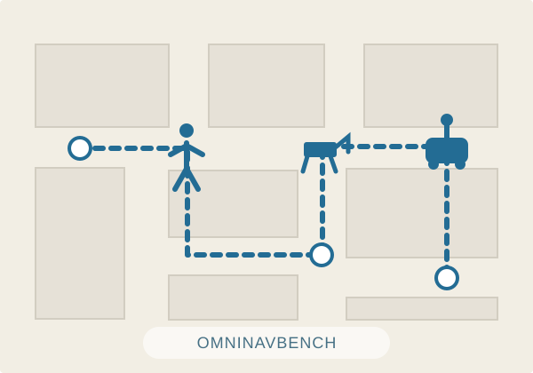

Incoming Master's Student
Tianyi Yang
ty.A face to the name, soon.
Selected Research
Navigation, perception & geometry
My research explores embodied intelligence and 3D vision, from navigation benchmarks to geometric perception.

RSS 2026Featured project
A unified benchmark for compositional navigation across six task families and three robot embodiments, with human-teleoperated reference trajectories.

arXiv 2026First-author paper
Tianyi Yang, Haojun Yang, Jipeng Xiao, Xuesong Chen, Shaoshuai Shi, Li Jiang, Zhipeng Zhang
Block-wise streaming 3D reconstruction for long driving sequences, combining local bidirectional context with confidence-aware re-anchoring to reduce drift.

ACM Multimedia 2026Paper
Mengke Zhang, Tianyi Yang, Xinzhuo Li, Anlong Ming
Using structure-preserving image editing priors to recover depth under challenging appearance shifts, including adverse weather and illumination.